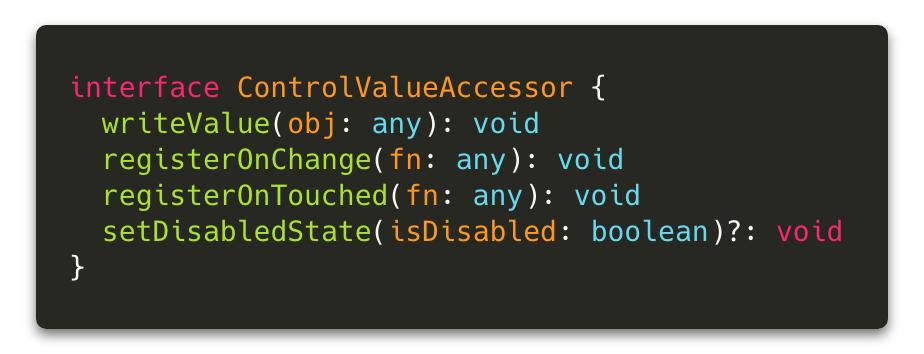
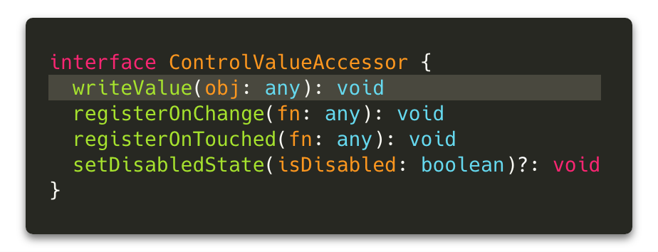
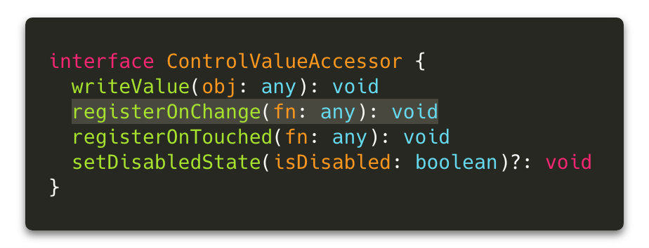
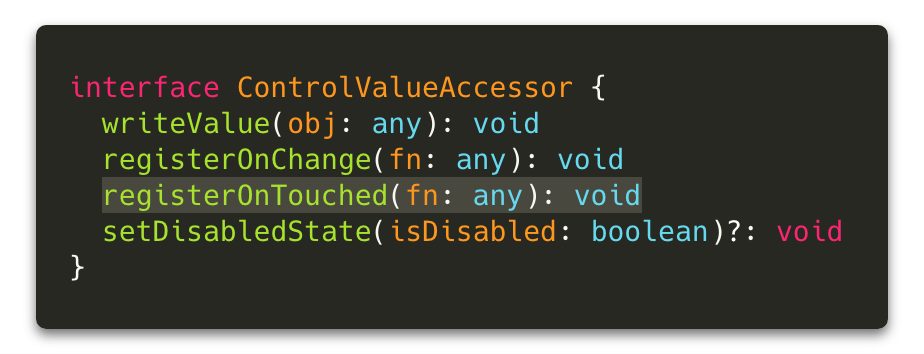
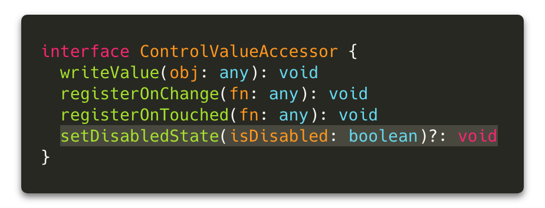

Handling Angular Forms Without Losing Your Sanity
Jennifer Wadella

Jennifer Wadella
@likeOMGitsFEDAY
- Director of Angular Development at Bitovi
- International Speaker (pre-pandemic)
- Kombucha brewin' crazy plant lady

This talk may contain strong language, harsh truths, and serious passion.
“Why’d you have to go and make things so complicated?”

- Avril Lavigne, implementing Angular forms in 2020
Quick Overview of the Basics
Template-driven Forms vs. Reactive Forms
Template Driven Forms
- Use "FormsModule"
- Uses ngModel directive to bind to inputs
- Logic in Template syntax
- Asynchronous
Template Driven Forms ...
Great for simple use-cases.
Reactive Forms
- Use "ReactiveFormsModule"
- Uses "formControl" directives to bind to inputs
- Logic in Controller(reactive"ish"ly programmed)
- Synchronous
Reactive Forms ...
Allow for advanced customization.
| Feature | FormsModule | ReactiveFormsModule |
|---|---|---|
| Validator Directives: EmailValidator, CheckboxRequiredValidator, MaxLengthValidator, MinLengthValidator, PatternValidator, RequiredValidator, | ✅ | ✅ |
| Value Accessor Directives: DefaultValueAccessor, NumberValueAccessor, RadioControlValueAccessor, RangeValueAccessor, SelectControlValueAccessor, SelectMultipleControlValueAccessor | ✅ | ✅ |
| Status Directives: NgControlStatus, NgControlStatusGroup, NgSelectOption, | ✅ | ✅ |
| Form Control Creation Directives: NgForm, NgModel, NgModelGroup, | ✅ | |
| Form Control Directives: FormArrayName, FormControlDirective, FormControlName, FormGroupDirective, FormControlName, FormGroupDirective, FormGroupName, | ✅ | |
| Providers: FormBuilder | ✅ |
Angular Forms Building Blocks
- Form Control: basic form building block to create an input/radio/select/etc. Tracks the value and validation status.
- Form Group: a group of form controls.
- Form Array: an array of form controls.
- FormControlName that ties form element to a formControl.
- FormBuilder: shorthand syntax for creating groups and arrays
Form Control
The basic element of building Angular forms is the FormControl. This is a class that represents that input element on a page with a name value you’re likely used to seeing.
Form Group
FormGroup is the class that allows us to group a number of controls together. It also extends the AbstractControl class, meaning we can track the validity and value of all the FormControls in a FormGroup together.
This allows us to easily manage our form as a whole. The `[formGroup]` directive binds the FormGroup to a DOM element.
Form Array
FormArray is a class that aggregates FormControls into an array, similar to FormGroup creating an object from FormControls.
FormArrays can have controls pushed to them or removed from them similar to the way you’d manipulate an array in vanilla JS, and offer us a lot of power and flexibility when creating nested and dynamic forms.
Form Builder
Repeatedly typing new FormControl(''), new FormGroup({}), and new FormArray([]) can become a bit tedious, especially when creating larger forms.
Angular has shorthand syntax we can use thanks to the FormBuilder class.
Complicated Problems
- I need dynamic required fields
- I need custom validation rules
- I need to display one thing in an input field
for the user but submit something else - I need to dynamically create and remove form controls
- I want parts of a form nested across components or routes
Demo Code Available:
Problem 1:
I need dynamic required fields
How 'bout some validation ya'll?

We'll Let Angular Do the Heavy Lifting

This means we need to highlight invalid untouched fields on save
We can do this pretty easily by marking them as touched.
Problem 2:
I need custom validation rules
Who doesn't love a good date regex?

Problem 3:
I need to display one thing in an input field
for the user but submit something else
Likely use case: the library I’m
using doesn’t play nice with reactive forms.
Enter our hero -
the Control Value Accessor
Not as scary as it sounds - it's just a way to build a custom input.
From the docs: Defines an INTERFACE that acts as a bridge between the Angular forms API and a native element in the DOM.
CVA Interface
write Value

Writes new value to the element.
register On Change

Registers a callback function that is called when
the control's value changes in the UI.
register On Touched

Registers a callback function is called by the forms
API on initialization to update the form model on blur.
set Disabled State

Returns a boolean value when a
formControl's disabled status changes
CVA is great for granular control of displaying
to the UI and communicating with the forms API

CVA Key Concepts
- Keep your wrapper components dumb.
- Just input and output form values!
- Leave validation logic to the parent form component.
Back to our initial problem ...

Let's wrap it in a component
that implements the CVA interface

Good for more than just
random library components!

You can use the CVA to create reusable form
elements instead of drowning in event emitter soup!
Problem 4:
I need to dynamically add and
remove form controls & form groups
Problem 5:
I want parts of a form nested across components or routes
Enter another hero -
the Control Container
The ControlContainer is a base class for form directives that contain multiple registered instances of NgControl. We can use the ControlContainer to access FormControls, FormGroups, and FormArrays and manage a main form chunked across components.
Tips and Tricks

You can get into some sketchy situations
listening for formControl changes and acting on them.
patchValue(value: any, opts: {
onlySelf?: boolean;
emitEvent?: boolean;
} = {}): void
Take advantage of the options param
and don't emit an event on your changes.
When initializing a formControl to use with a component implementing the CVA interface the disabled status must be set(whether enabled or disabled) to ensure the formControl behaves properly.
Summary
- Reactive forms - yay
- Custom requiredness and validation is a breeze
- Control Value Accessor solves almost any form issue
- Use ControlContainer to manage complex forms across components
- Maybe forms aren't so complicated
- Avril Lavigne is timeless
Demo code: https://github.com/tehfedaykin/ControlContainerExample
Questions?
Slides available at: angularforms.jenniferwadella.com

Need help with Angular? Work with me! jennifer@bitovi.com